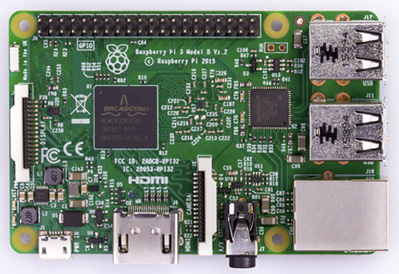
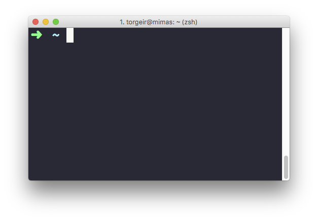
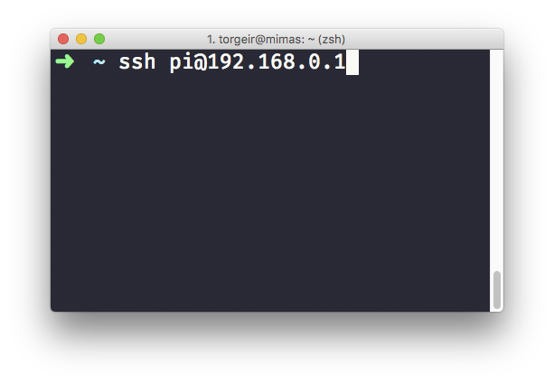
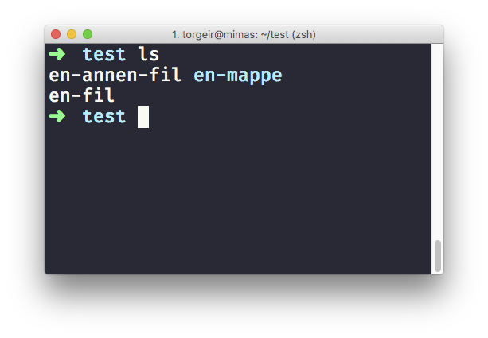
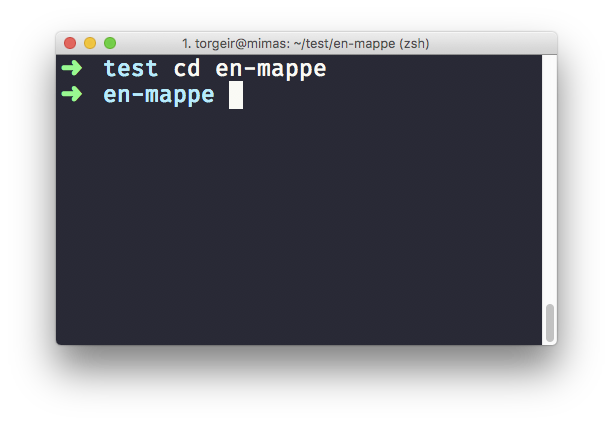
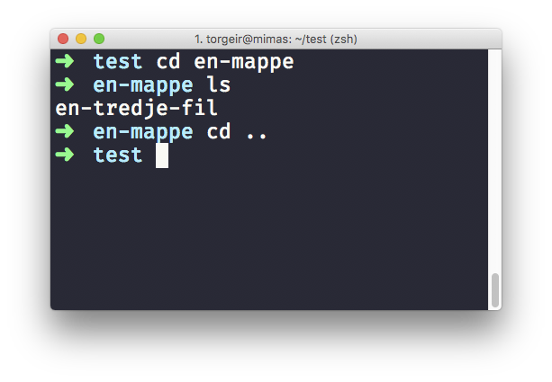
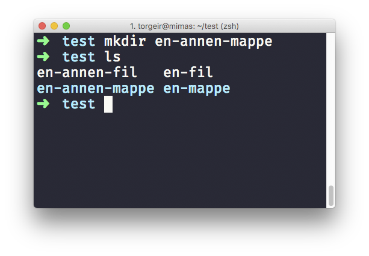
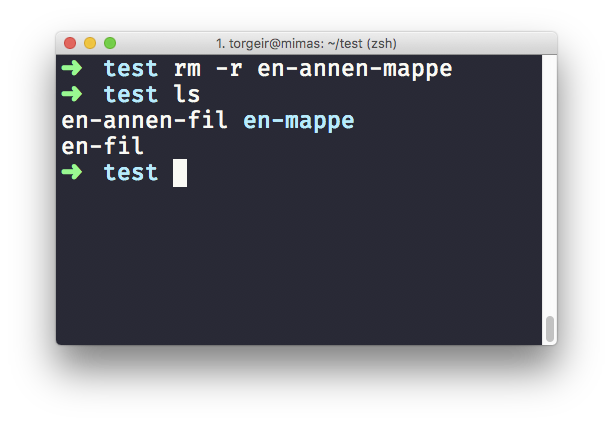

name: heading class: center, middle, inverse --- template: heading # Processing og Raspberry PI ## Torgeir Thoresen ## <a href="mailto:torgeir.thoresen@gmail.com">torgeir.thoresen@gmail.com</a> ## <a href="http://twitter.com/torgeir">@torgeir</a> --- # Agenda ## Serial port via Processing ## Raspberry PI ## Lynkurs i linux terminalen ## Flytte kode til PIen ## Styre GPIO pins fra python --- # Koble til serial porten fra Processing https://www.processing.org/reference/libraries/serial/ ```c import processing.serial.*; Serial port; void setup() { connectToArduino(); } void connectToArduino() { String device = findDevice(); port = new Serial(this, device, 9600); // kast eksisterende data, hvis vi kobler på midt mens arduinoen skriver port.clear(); } ``` -- ```c String findDevice() { for (String device : Serial.list()) { // os x/linux er formatet /dev/cu.usbmodemfd<tall> // på windows er det COM<tall> if (device.indexOf("tty.usbmodem") != -1) { return device; } } throw new RuntimeException("Could not find arduino"); } ``` --- # Lese fra serial porten med Processing ```java void draw() { String data = readData(); if (data.length() > 0) { println("got: " + data); } } ``` -- ```java int newline = 10; // \n String readData() { if (port.available() > 0) { String read = port.readStringUntil(newline); if (read != null) { return read.replace("\r\n", ""); } } return ""; } ``` --- template: heading # Demo ## Arduino + Processing --- # Raspberry PI ## En liten, fullverdig pc ## Kjører linux (operativsystem) ## Har GPIO porter  --- # Hva trenger du? ## Raspberry PI, strømforsyning og minnekort (SD) ## Skjerm, mus, tastatur og HDMI-kabel ## Installer [NOOBS](https://www.raspberrypi.org/downloads/noobs/) på SD-kortet ## Følg [instruksjonene!](https://www.raspberrypi.org/learning/software-guide/) ## - ## Masse [bra guider](https://www.raspberrypi.org/resources/learn/) på nett! ## Feks: [Pyhiscal Computing with Python](https://www.raspberrypi.org/learning/physical-computing-with-python/) --- template: heading # Then what?  --- template: heading # Noen enkle kommandoer --- class: center middle # `ssh bruker@adresse` kobler til PIen  <span style="bottom: 4rem; left: 17rem; position: absolute">brukernavn `pi`, passord `raspberry`</span> --- class: center middle # `ls` lister filene i mappen du står i  --- class: center middle # `cd` navigerer til en annen mappe  --- class: center middle # ..og `cd ..` går tilbake igjen  --- class: center middle # `mkdir` lager nye mapper  --- class: center middle # `rm -r` sletter filer/mapper  --- template: heading # Men, jeg vil kjøre [python](https://www.raspberrypi.org/documentation/usage/python/)-programmer! --- # Kopier og kjør programmet på PIen ## På PIen ```sh # installer python og gpio-biblioteket sudo apt-get install python-dev python-rpi.gpio ``` ## På din pc ```sh # kopier programmet til PIen $ scp program.py pi@192.168.0.1 ``` ## På PIen ```sh # kjør! $ python program.py ``` --- # Styre [GPIO](https://www.raspberrypi.org/documentation/usage/gpio/) pins fra python <br> ```python import RPi.GPIO as gpio import time led = 14 gpio.setmode(gpio.BCM) gpio.setup(led, gpio.OUT) while True: gpio.output(led, gpio.HIGH) time.sleep(1) gpio.output(led, gpio.LOW) time.sleep(1) ``` --- # Og masse mer! ## - Tutorials fra [theraspberrypiguy](https://www.theraspberrypiguy.com/tutorials/) - 1 - [Preparing an SD card...](https://www.theraspberrypiguy.com/tutorials/raspberry-pi-preparing-an-sd-card/) - 2 - [Setting it up...](https://www.theraspberrypiguy.com/raspberry-pi-setting-it-up/) - 3 - [Using the GPIO](https://www.theraspberrypiguy.com/raspberry-pi-using-the-gpio/) - 4 - [Koble til PI direkte fra pc, med kabel](https://pihw.wordpress.com/guides/direct-network-connection/) ## - Hjelp fra [raspberrypi.org/help](http://raspberrypi.org/help) - [Learn](https://www.raspberrypi.org/resources/learn/) - [Help videos](https://www.raspberrypi.org/help/videos/) - [Terminal](https://www.raspberrypi.org/documentation/usage/terminal/README.md) --- template: heading # Det er [linux](http://www.omgubuntu.co.uk/2016/08/25-awesome-unexpected-things-powered-linux), du <em>kan</em> gjøre.. alt. <br> ## Torgeir Thoresen ### <a href="mailto:torgeir.thoresen@gmail.com">torgeir.thoresen@gmail.com</a> ### <a href="http://twitter.com/torgeir">@torgeir</a>